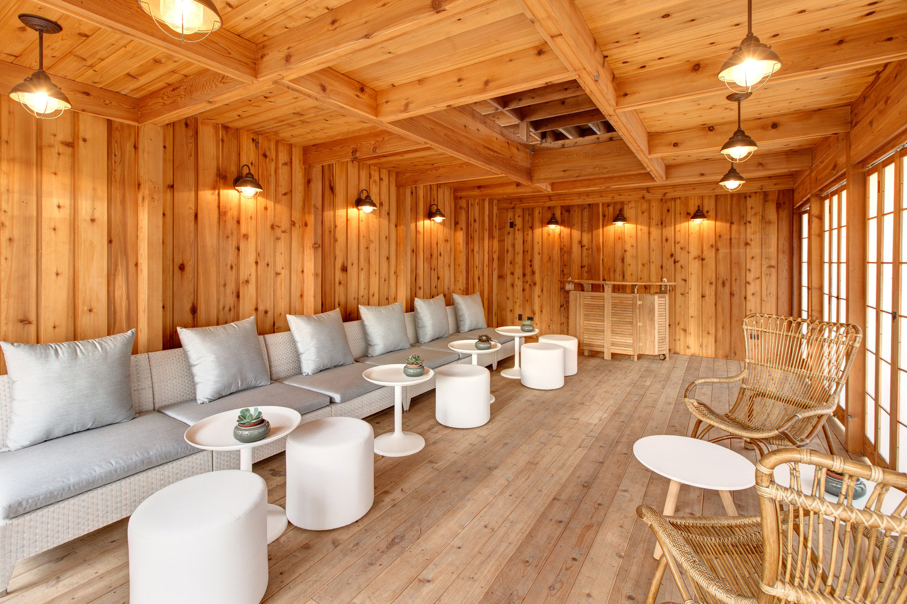

The Bach House is one of the homes Wright designed after his 1911 return from Europe, and is an example of Frank Lloyd Wright’s late Prairie style. The home is part of a series of geometric, cubic homes with overhanging, flat roofs. Of the houses of this type in Chicago, with cubic masses and a slab roof, the Bach House is the only one left standing. The home’s individuality, coupled with its high artistic merit and famous architect, make it significant historically and culturally. The Emil Bach House is a variation on the “Fireproof House for $ 5000” presented in an article by Frank Lloyd Wright, in the 1907 Ladies Home Journal.
It was declared a Chicago Landmark on September 28, 1977, and was added to the U.S. National Register of Historic Places on January 23, 1979. The completion of a nearly two year renovation marked the beginning of its life as a vacation home and event rental space. A Japanese Tea Garden on the property was part of the renovation, and pays homage to Wright’s experience in Japan and its influence on his later works.
